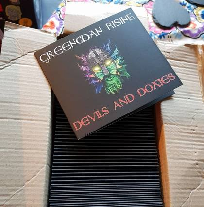
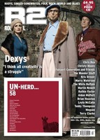

Greenman Rising is a folk band based in the English Midlands. ...
>>>read more
News
Ratcliffe Highway played on James Fagan’s “Thank Goodness its Folk” radio show
Monday December 11, 2017
“reminds me of kind a bit of a folky Joe Cocker, and I think you’ll know what I mean”
http://web.sheffieldlive.org/podcasts/thank-goodness-its-folk-08-12-2017-at-1100/
NOTE: James Fagan is a great folk musician and singer, often to be found playing and singing with Nancy Kerr (and with The James Brothers, Melrose Quartet, Glorystrokes). If you haven’t seen them then you are due a treat.
Check them out on Youtube, buy CDs, and remember, music is even better live!
Devils and Doxies debut CD released.
Monday June 12, 2017
Well, here we go, our little project is now open to the world. 
All the manufacturing has been done. We have all the CDs (boxes and boxes of them) and we’re dealing with the distribution ourselves.
You can buy them here on our website, or at any gig where we’re playing. If you know or recognise members of the band in the street they may have a supply; you never know, we might be that organised :-D
We recorded at Blue Moon studios who were brilliant. Mark Lee dealt with all our foibles and mistakes with patient professionalism, and it was a joy to watch his hands skip across the audio editing keyboard, managing the whole recording process. He has a great knowledge of the type of music and the instruments we play, which counts for a lot. Thankyou Mark, we couldn’t have done this without you.
More thanks to Jeremy Paul Carroll for mixing and mastering the tracks, so many tracks and instruments the mind boggles, and to Solly Mohamed and Adam Gajic for artwork and sleeve layout.
Oh, yeah, and there’s some music on there too!
Nine tracks of Greenman Rising, it’s real (no over-production) it’s basically us (ie. what you’ll hear from stage when it’s mixed right) and we hope you’ll like it.
Greenman Rising on R2 magazine cover disk 
Sunday July 24, 2016
Greenman Rising are on the “UN-HERD” cover disk of July/August 2016 R2 magazine.
The Ballad of Shakey Willy (by Jen Waghorn)
Monday July 11, 2016
We played for the party (in the Other Place Theatre, Stratford-upon-Avon) the other week for the British Graduate Shakespeare Conference 2016.
This is what our Jen got up to in the interval.
In her own words …
“Commissioned for the British Graduate Shakespeare Conference 2016, The Ballad of Shakey Willy is my attempt to get the naughty bits of every Shakespeare play (and a couple of his poems) into one song. There’s nothing like a bit of vaguely academically-researched filth to commemorate 400 years of the man himself.
“This is a live recording of the song’s first performance at the RSC’s The Other Place - thanks to Charlie Morton for recording it, to the Britgrad committee for letting me perform such a bloody long song in the middle of a party, and to the audience for laughing in all the right places.
“An audio version will be available as a music download very soon!
(quick footnote: since the recording I’ve added a line about Love’s Labours Won to the song, just to be thorough)“